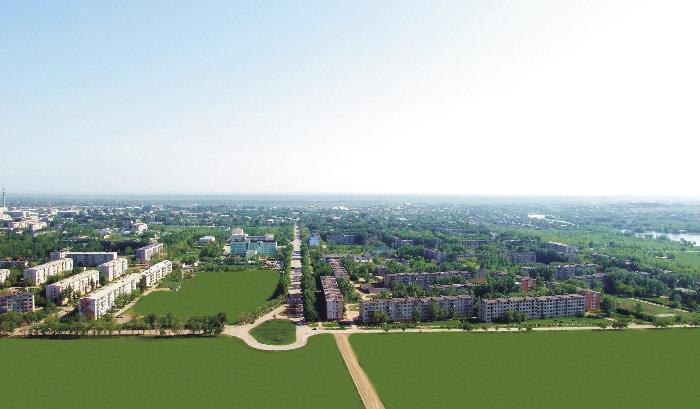

History
On the coast of the Shortanda River in the Kostanay region of Kazakhstan lies the city of Zhitikara,
which borders Russia. This is a small industrial town that exists due to the extraction of asbestos from canyons.
The prehistory of the modern city begins with the Kazakh aul Konildi, which was founded around 1880.
